My Zini Digital ERP mein Data Center VAULT (Bulk Import, JSON Schema & Full Backup) Kaise Use Karein? (Complete Hinglish Guide)
Kisi bhi school ke liye uska data — jaise students ki registry, staff records, fee structures, expenses aur salary payments — sabse keemti asset hota hai. Naye school onboarding ke waqt purane software se hazaron students ko import karna ho, ya har hafte poore school database ka ek safe backup download karke rakhna ho, dono kaam ek hi jagah se hone chahiye. Isi liye My Zini Digital ERP mein Data Center VAULT (/data-center) diya gaya hai. Is Hinglish guide mein humne live portal par har dataset card, Download Full School Backup, JSON Schema Guide, Sample Template Download aur category filters ko test karke poora walkthrough तैयार kiya hai.
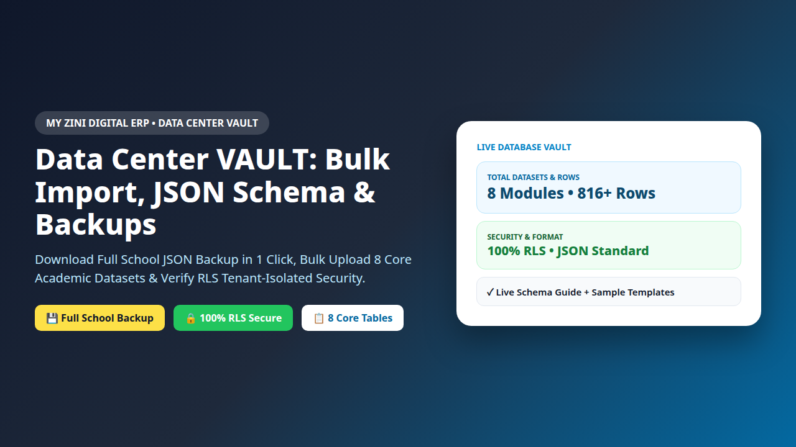
⚡ TL;DR — Quick Summary (AI & Reader Snapshot)
- Route: Sidebar mein
Data Center(https://myzini.digitalerp.shop/data-center). - 4 Live KPI Cards: Total Datasets (
8 Modules), Total Live Records (816verified rows), RLS Compliance (100% Secure), aur Backup Engine (JSON Format). - Top Actions:
Refresh CountsaurDownload Full School Backup(universal JSON snapshot). - 8 Core Dataset Cards:
owner(1),students(674),staff(19),classes(27),subjects(24),fees_types(9),expenses(8), aursalary_records(54) — har ek parBulk Upload+Schemabuttons. - JSON Schema Guide: Required keys list,
Copy JSONaurDownload Sample Template JSON.
1. Data Center VAULT Overview aur 4 Live KPI Cards
Jab aap sidebar se Data Center open karte hain, toh aapke saamne Data Center VAULT khulta hai jiska tagline hai: "Bulk data operations, JSON schema formats & full database backups". Top-right mein aapko Refresh Counts aur bright blue Download Full School Backup button dikhai deta hai.
📦 TOTAL DATASETS
8 Modules — Core academic & finance tables.
📊 TOTAL LIVE RECORDS
816 — Sabhi tables ki verified database rows ka live sum.
🔒 RLS COMPLIANCE
100% Secure — Tenant-isolated Row Level Security storage.
⚙️ BACKUP ENGINE
JSON Format — Universal export & migration standard.
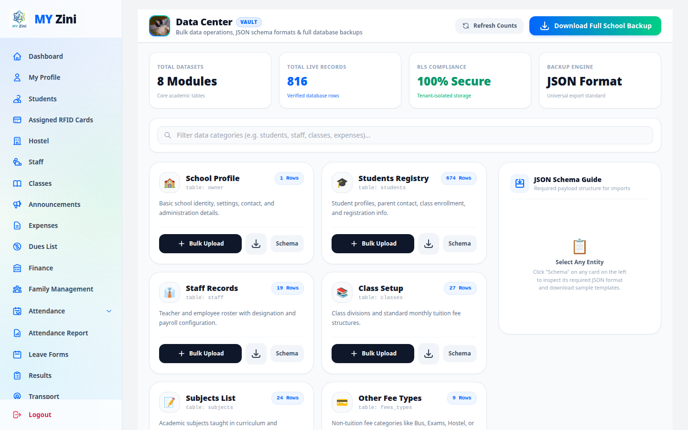

2. 8 Core Datasets aur 4-Step Bulk Upload Workflow
Data Center VAULT aapke poore school ERP ko 8 clean database tables mein organize karta hai. Har card par table ka naam, live row count, ek Bulk Upload file picker aur ek Schema button milta hai:
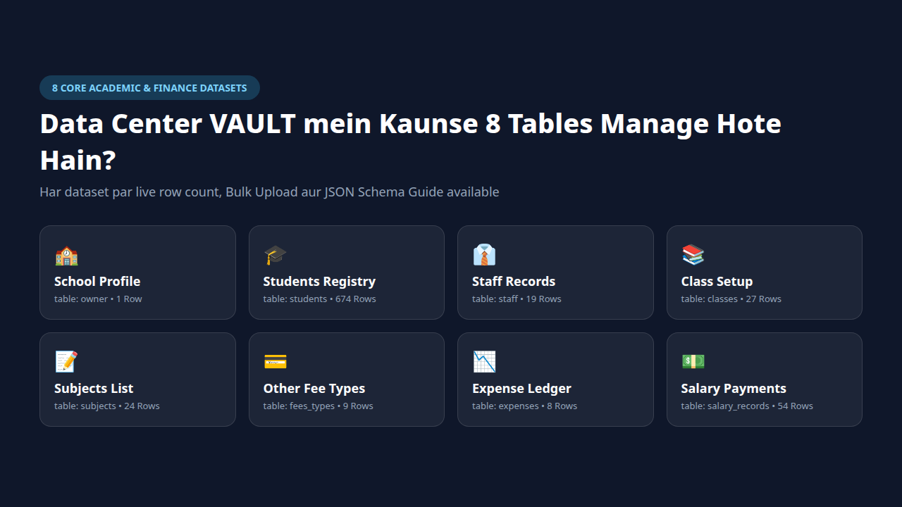
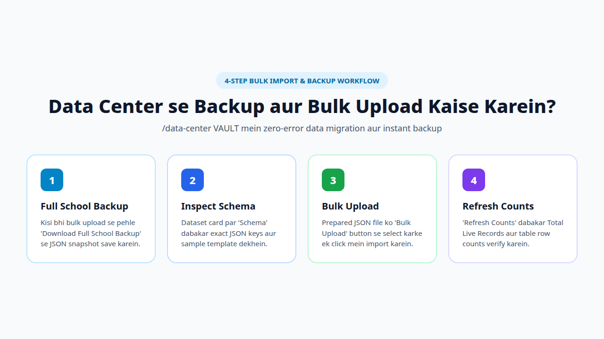
3. JSON Schema Guide: Required Keys, Copy JSON & Sample Template
Aksar bulk upload karte waqt column ya field name galat hone se import fail ho jaata hai. My Zini Digital ERP ne iske liye har dataset ke bagal mein Schema button diya hai. Jaise hi aap Students Registry par Schema click karte hain, right/bottom panel mein JSON Schema Guide open ho jaata hai jisme dikhta hai:
- REQUIRED JSON KEYS: Exact mandatory fields — jaise Students Registry ke liye
name,class,roll_number,mobile,father_name, aurregistration_date. - SAMPLE JSON STRUCTURE + Copy JSON: Ready-to-use JSON array preview jise aap ek click mein copy kar sakte hain.
- Download Sample Template JSON: Seedha apne computer par sample
.jsontemplate file download karein aur Excel/Script se fill karke Bulk Upload kar dein!
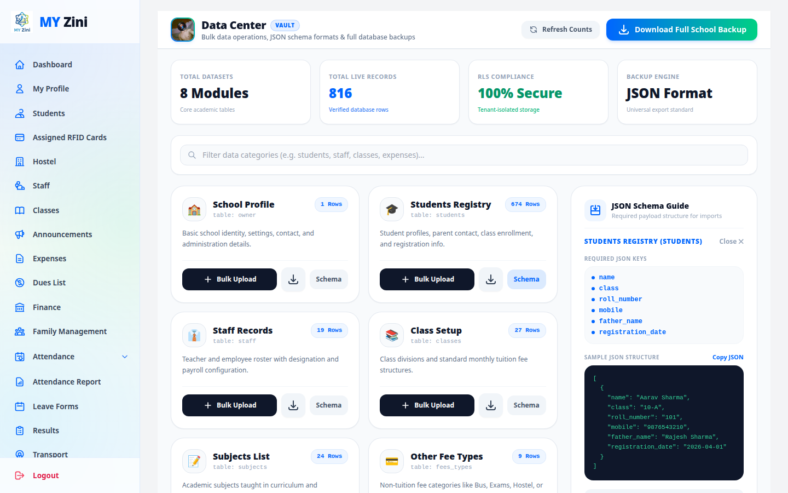
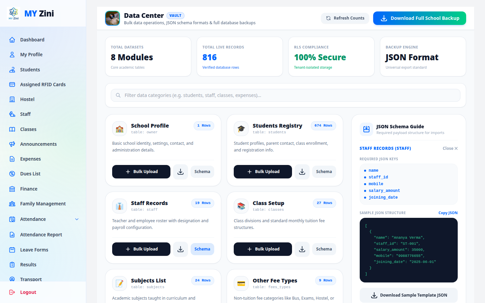
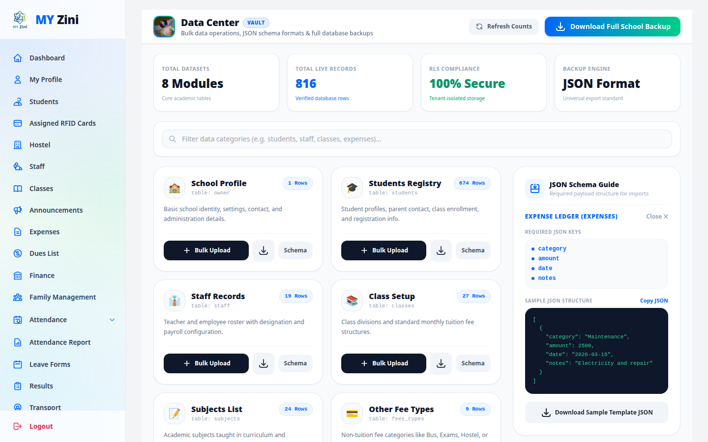
4. Category Search Filter, Mobile View aur RLS Security Advantage
Page par maujood search box (Filter data categories (e.g. students, staff, classes, expenses)...) se aap turant kisi specific table ko filter kar sakte hain. Saath hi mobile screen (390px) par bhi har KPI card, Backup button aur Dataset card cleanly stack hota hai.
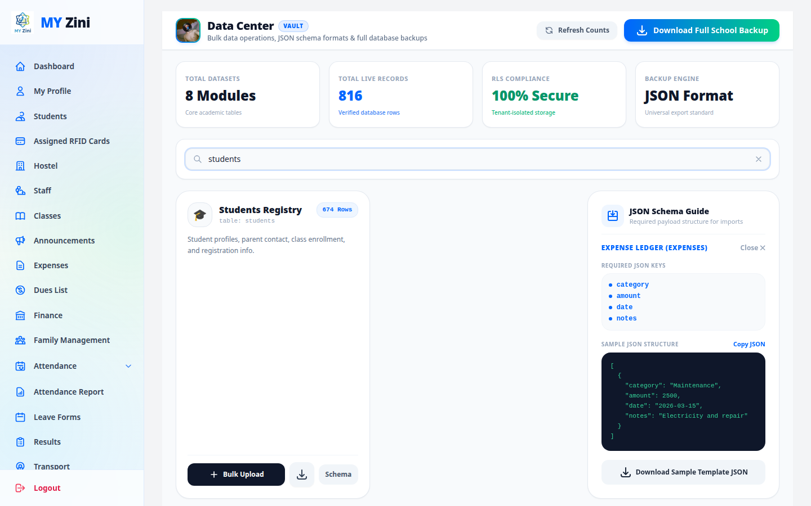
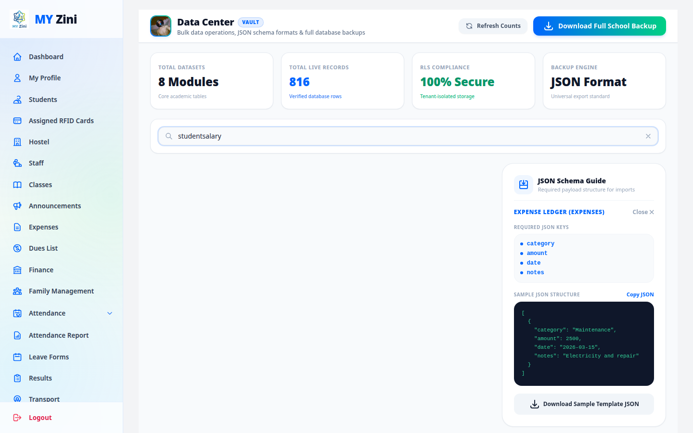
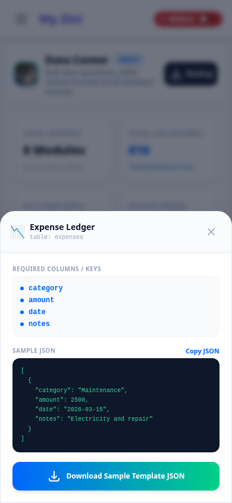
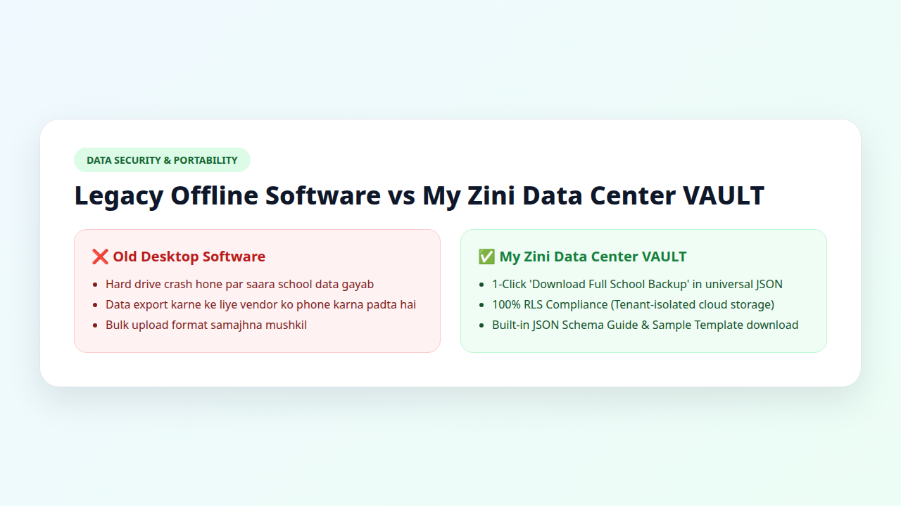
Quick Reference Table: 8 Datasets in /data-center
| Dataset Card | DB Table Name | Kya Store Hota Hai? |
|---|---|---|
| 🏫 School Profile | owner | School identity, settings, contact & admin details |
| 🎓 Students Registry | students | Student profiles, parent contacts, class & roll numbers |
| 👔 Staff Records | staff | Teaching/non-teaching staff, designation & payroll rules |
| 📚 Class Setup | classes | Class divisions & monthly tuition fee structures |
| 📝 Subjects List | subjects | Curriculum & examination subjects |
| 💳 Other Fee Types | fees_types | Bus, Exams, Hostel, Library jaise non-tuition fee heads |
| 📉 Expense Ledger | expenses | Daily operational bills, utilities & vendor payouts |
| 💵 Salary Payments | salary_records | Staff salary disbursement history records |
Frequently Asked Questions (FAQs)
1. "Download Full School Backup" button dabane par kya download hota hai?
Is button par click karte hi aapke school ke sabhi 8 core modules (School Profile, Students, Staff, Classes, Subjects, Fee Types, Expenses aur Salary Records) ka ek complete, structured JSON backup file aapke computer ya phone mein download ho jaata hai.
2. Kya Excel ya CSV file ko JSON mein badalkar Bulk Upload kiya ja sakta hai?
Haan bilkul! Pehle us dataset ke card par Schema dabakar Download Sample Template JSON lein, aur kisi bhi free Excel-to-JSON converter se apni sheet ko usi required key format mein convert karke Bulk Upload kar dein.
3. "RLS COMPLIANCE: 100% Secure (Tenant-isolated storage)" ka kya matlab hai?
RLS (Row Level Security) database level ki sabse strong security hoti hai. Iska matlab hai ki har school ka data cryptographic tenant ID se alag rehta hai — koi bhi doosra school ya unauthorized user aapke school ke backups ya rows ko kabhi dekh ya access nahi kar sakta.
4. "Refresh Counts" button ka kya kaam hai?
Jab aap Bulk Upload karte hain ya kisi doosre tab mein naye students/expenses add karte hain, toh Refresh Counts dabate hi Data Center sabhi 8 tables ki live rows dubara count karke exact number (e.g. 816 Total Live Records) dikha deta hai.
5. Kya Bulk Upload karne par purana data overwrite ho jaata hai?
Nahi, bulk upload naye records ko insert/merge karta hai. Phir bhi best practice ke taur par kisi bhi bade bulk upload se pehle ek baar Download Full School Backup karke safe snapshot rakhna hamesha samajhdari hoti hai.
6. "Students Registry (students)" ke alawa aur kin modules mein Bulk Upload kaam aata hai?
Naye session ya naye school setup ke waqt aap sirf students hi nahi, balki Classes (27 rows), Subjects (24 rows), Staff Records, aur Other Fee Types ko bhi ek saath Bulk Upload karke 5 minute mein poora school ERP ready kar sakte hain.
7. Agar JSON file mein koi required key (jaise mobile ya roll_number) missing ho toh kya hoga?
Har dataset ke JSON Schema Guide mein REQUIRED JSON KEYS saaf-saaf highlight hoti hain. Agar koi mandatory key missing hogi toh validation check aapko error bata dega taaki incomplete data database mein na jaaye.
8. Kya hum /students page se bhi Excel/CSV export kar sakte hain?
Haan! Agar aapko sirf students ki list Excel (XLSX) ya CSV mein chahiye, toh aap /students aur /staff par maujood Export buttons use kar sakte hain, jabki poore school ka full multi-table database backup /data-center se milta hai.
9. Apne school ke liye My Zini Digital ERP kaise shuru karein?
Aap Digital ERP Registration Form par jaakar sirf ₹100 Registration Fee ke saath apna school register kar sakte hain aur Data Center VAULT ke saath apna purana data migrate kar sakte hain.
10. School ka weekly backup lena kyun zaroori hai?
Waise toh My Zini Digital ERP 24x7 secure cloud par chalta hai, lekin har Friday ko Download Full School Backup karke apne Google Drive ya local PC par ek JSON copy rakhne se school management ko 100% peace of mind aur offline audit archive mil jaata hai.
11. "Copy JSON" aur "Download Sample Template JSON" mein kya antar hai?
Copy JSON sample structure ko aapke clipboard par copy karta hai (developers ya scripts ke liye best), jabki Download Sample Template JSON aapke device par ek ready .json file save karta hai jise aap edit karke seedha upload kar sakte hain.
12. Kya Data Center mobile browser se bhi kaam karta hai?
Haan! Live mobile view mein dekha gaya ki Principal apne smartphone par bhi /data-center kholkar live row counts check kar sakte hain aur Full School Backup download kar sakte hain.
13. "Expense Ledger (expenses)" aur "Salary Payments (salary_records)" ka backup CA audit mein kaise kaam aata hai?
Financial year closing par aap expenses aur salary_records ka poora data JSON backup mein export karke apne Chartered Accountant ya audit software ke saath easily share kar sakte hain.
14. Kya Data Center mein filter box case-sensitive hai?
Bilkul nahi! Aap small letters mein students, staff, salary ya owner kuch bhi type karein, matching dataset card turant screen par filter ho jaata hai.
15. "School Profile (owner)" dataset mein kya-kya information save hoti hai?
owner table mein aapke school ki core identity store hoti hai — jaise School Name, Principal/Admin Email, Contact Mobile, Institution Address, Logo URL, aur academic configuration. Full School Backup mein yeh 1 row hamesha include rehti hai taaki school ki branding kabhi na khoye.
16. "Class Setup (classes)" aur "Subjects List (subjects)" ko Bulk Upload karne ka kya fayda hai?
Naye school ke liye Playgroup se Class 12 tak ki 27 classes aur unki alag-alag monthly tuition fees (e.g. Nursery ₹500, Class 1 ₹800, Class 10 ₹1800) aur 24 academic subjects (Hindi, English, Maths, Science, Computer) ko manually ek-ek karke type karne ke bajaye aap ek JSON file se 2 seconds mein upload kar sakte hain.
17. "Other Fee Types (fees_types)" table ka use kahan-kahan hota hai?
fees_types table mein aapke school ke sabhi non-tuition fee heads store hote hain — jaise Bus Fee, Exam Fee, Admit Card Fee, Hostel Fee, Library Fee, ya Annual Sports Fee. Yahi 9 fee types aapko Payments & Shortcuts Hub ke Apply Other Dues tab mein dikhte hain.
18. Bulk Upload ke dauran agar 500 students ki JSON file mein 2 rows mein error aa jaaye toh kya karein?
Sabse pehle JSON Schema Guide mein check karein ki un 2 rows mein name, class, roll_number, mobile, father_name, aur registration_date mein se koi key khali ya galat spelling mein toh nahi hai. Error fix karke dubara upload karne par saare records cleanly save ho jaate hain.
19. Kya hum "Download Full School Backup" ki JSON file ko Excel mein khol sakte hain?
Haan bilkul! JSON ek universal standard format hai. Microsoft Excel ke Data → Get Data → From File → From JSON option se ya Google Sheets ke JSON importer se aap kisi bhi backup file ko table ke roop mein Excel mein kholkar dekh sakte hain.
20. Data Center VAULT mein "Total Live Records (816)" kaise calculate hota hai?
Yeh KPI card aapke school ke sabhi 8 core modules ki active database rows ko jodkar dikhata hai: 1 (owner) + 674 (students) + 19 (staff) + 27 (classes) + 24 (subjects) + 9 (fees_types) + 8 (expenses) + 54 (salary_records) = 816 Verified Rows.
21. Kya school ke purane session ka data delete karke naya session shuru karna chahiye?
Nahi! Purane session ka data kabhi delete na karein. Pehle Download Full School Backup se poore saal ka final archive save karein, aur phir /students aur /classes mein students ko next class mein promote karein taaki pichhle saal ki fee history aur results hamesha available rahein.
22. Kya Staff ya Teachers ko Data Center VAULT ka access milta hai?
Security aur RLS Compliance ke liye Data Center VAULT sirf authorized School Admin / Principal account ke liye hota hai, taaki koi bhi staff member galti se bulk records upload ya poore school ka database backup download na kar sake.
23. Kya Backup file mein Students ke photos aur documents bhi aate hain?
JSON backup file mein har student, staff aur driver ki profile details ke saath unke cloud photo URLs bhi store rehte hain, jisse file ka size lightweight (kuch KB/MB) rehta hai aur 1 second mein download ho jaati hai.
24. Data Center aur Generator Tools mein kya farq hai?
Generator Tools (/generator-tools) parents aur students ke liye printable PDFs (ID Cards, Admit Cards, Fee Bills, Marksheets, Certificates) banane ke liye hai, jabki Data Center VAULT (/data-center) admin ke liye database backup, JSON Schema inspection aur Bulk Import operations ke liye hai.
25. Kya Bulk Upload karne ke liye koi coding ya technical knowledge chahiye?
Bilkul nahi! Har card par maujood Schema button aapko ek ready-made sample template dikhata hai. Aap bas Download Sample Template JSON par click karke us file mein apna data daalein (ya kisi free Excel-to-JSON tool ka use karein) aur Bulk Upload dabakar file select kar dein — baaki saara kaam My Zini ERP khud kar leta hai.
26. Agar kisi school ke paas 2,000+ students hon toh kya Data Center unhe handle kar sakta hai?
Haan! Data Center VAULT cloud-native architecture par bana hai, isliye chahe aapke school mein 200 students hon ya 5,000+ students, Download Full School Backup aur Bulk Upload dono seconds mein process ho jaate hain aur RLS security ke saath tenant-isolated rehte hain.
27. Data Center mein "Backup Engine: JSON Format" kyun chuna gaya hai?
JSON (JavaScript Object Notation) duniya ka sabse lightweight aur universal data exchange standard hai. CSV ke muqable JSON mein nested structures, special Hindi/English characters, dates aur numeric types 100% accurate rehte hain aur bina kisi data corruption ke restore ho sakte hain.
28. Kya "Download Full School Backup" karne se live portal par koi slowdown hota hai?
Bilkul nahi! Read-only backup export cloud storage se instant generate hota hai, isliye school ke fee counter, attendance ya student login par koi bhi performance impact nahi padta.
Real School Scenarios: Data Center VAULT ka Daily & Monthly Use
1. Naye School Onboarding (10-Minute Migration)
Purane software se exported list ko classes, subjects, staff aur students ke Sample JSON Templates mein convert karke Bulk Upload karein — 10 minute mein poora school live!
2. Every Friday 1-Click Cloud-to-Local Backup
Har Friday shaam ko office band karne se pehle Download Full School Backup par ek click karke sabhi 816+ records ka JSON snapshot archive karein.
3. Annual Session Rollover Safety
Naye academic session mein class promotion ya bulk fee update karne se pehle poora database backup download karke 100% safety ensure karein.
4. Developer & IT Integration
School IT team Copy JSON schema use karke custom biometric ya legacy tools ka data My Zini ERP ke saath cleanly sync kar sakti hai.
Pro Tip: Hamesha bulk upload ka order aise rakhein: pehle Class Setup (classes) aur Subjects List upload karein, uske baad Staff Records aur sabse aakhir mein Students Registry — isse saari class aur subject mappings 100% clean rehti hain.